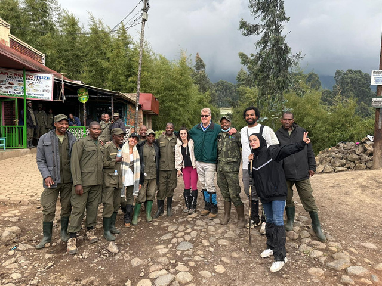

Media Familiarization Trip
Rwanda's story was often told through outdated lenses. I conceptualized and led a flagship initiative inviting Qatari and regional journalists to experience Rwanda firsthand, shifting narratives toward innovation, tourism, and development.
26
media coverages generated
6+
major Qatari outlets
